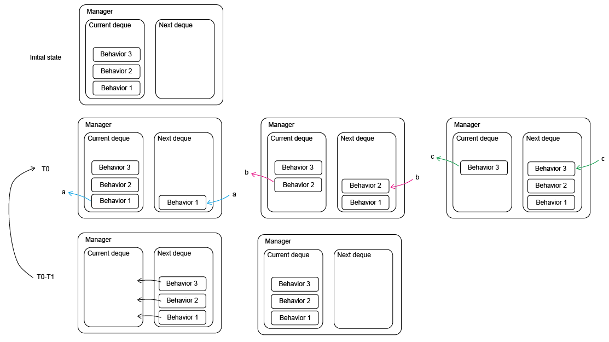

Event manager¶
The event manager is the system which manage the different behavior of a simulation. It is composed of two lists :
current: list of actions to be executed during the current simulation step.next: list of actions to be executed for the next simulation step, this list is filled during the current simulation step.
A behavior is a function which describes/contains the actions requested to realize an event. For example, the behavior which describe the cell division is composed of :
growing cell area until its reach a certain threshold
dividing cell into two daughter cell

# Generate 2D tyssue
%matplotlib inline
import matplotlib.pyplot as plt
import numpy as np
import pandas as pd
import ipywidgets as widgets
from IPython import display
import ipyvolume as ipv
# Core object
from tyssue import Sheet
# Simple 2D geometry
from tyssue import PlanarGeometry as sgeom
# Visualisation
from tyssue.draw import (
sheet_view,
highlight_faces,
create_gif,
browse_history
)
sheet = Sheet.planar_sheet_2d(
'basic2D', # a name or identifier for this sheet
nx=6, # approximate number of cells on the x axis
ny=7, # approximate number of cells along the y axis
distx=1, # distance between 2 cells along x
disty=1, # distance between 2 cells along y
noise=0 # some position noise
)
sgeom.update_all(sheet)
# Give the tissue a nice hear cut ;)
sheet.sanitize(trim_borders=True, order_edges=True)
sgeom.update_all(sheet)
# Visualisation of the tissue
fig, ax = sheet_view(sheet, mode="2D")
fig.set_size_inches(8, 8)
from tyssue.dynamics.planar_vertex_model import PlanarModel as smodel
from tyssue.solvers import QSSolver
from pprint import pprint
specs = {
'edge': {
'is_active': 1,
'line_tension': 0.12,
'ux': 0.0,
'uy': 0.0,
'uz': 0.0
},
'face': {
'area_elasticity': 1.0,
'contractility': 0.04,
'is_alive': 1,
'prefered_area': 1.0},
'settings': {
'grad_norm_factor': 1.0,
'nrj_norm_factor': 1.0
},
'vert': {
'is_active': 1
}
}
# Update the specs (adds / changes the values in the dataframes' columns)
sheet.update_specs(specs)
# Check the tissue is at its equilibrium
solver = QSSolver()
res = solver.find_energy_min(sheet, sgeom, smodel)
# Visualisation of the tissue
fig, ax = sheet_view(sheet, mode="2D")
Write a behavior function¶
Behavior parameters function are composed of two parts :
signature part, which contains
sheetandmanagerparameterkeywords part, which is specific to one behavior function
To add a behavior to the manager, append method has to be used, and it need as parameter the function name and the keyword part.
from tyssue.topology.sheet_topology import cell_division
def division(sheet, manager, cell_id=0, crit_area=2.0, growth_rate=0.1, dt=1.):
"""Defines a division behavior.
Parameters
----------
sheet: a :class:`Sheet` object
cell_id: int
the index of the dividing cell
crit_area: float
the area at which
growth_rate: float
increase in the prefered are per unit time
A_0(t + dt) = A0(t) * (1 + growth_rate * dt)
"""
if sheet.face_df.loc[cell_id, "area"] > crit_area:
# restore prefered_area
sheet.face_df.loc[12, "prefered_area"] = 1.0
# Do division
daughter = cell_division(sheet, cell_id, sgeom)
# Update the topology
sheet.reset_index(order=True)
# update geometry
sgeom.update_all(sheet)
print(f"cell n°{daughter} is born")
else:
#
sheet.face_df.loc[12, "prefered_area"] *= (1 + dt * growth_rate)
manager.append(division, cell_id=cell_id)
When the manager is initialised, wait function is aded by default in the current event list. Any new event added to the manager are added to the next list.
from tyssue.behaviors import EventManager
# Initialisation of manager
manager = EventManager("face")
# Add action/event to the manager
manager.append(division, cell_id=12)
print('manager.current :')
print(manager.current)
print()
print('manager.next :')
print(manager.next)
manager.current :
deque([(<function wait at 0x7f75b8bddee0>, {'face_id': -1, 'n_steps': 1})])
manager.next :
deque([(<function division at 0x7f75a9eabc10>, {'cell_id': 12})])
from tyssue import History
t = 0
stop = 30
# The History object records all the time steps
history = History(sheet)
while manager.current and t < stop:
# Execute the event in the current list
manager.execute(sheet)
t += 1
sheet.reset_index(order=True)
# Find energy min
res = solver.find_energy_min(sheet, sgeom, smodel)
history.record()
# Switch event list from the next list to the current list
manager.update()
cell n°25 is born
draw_specs = {
"edge": {
"color": lambda sheet: sheet.edge_df.length
},
"face": {
"visible": True,
"color": lambda sheet: sheet.face_df.area,
"color_range": (0, 2)
}
}
create_gif(history, "growth.gif", num_frames=30, margin=5, **draw_specs)
display.Image("growth.gif")
<IPython.core.display.Image object>
# Visualisation of the tissue
fig, ax = sheet_view(sheet, mode="2D")
fig.set_size_inches(8, 8)